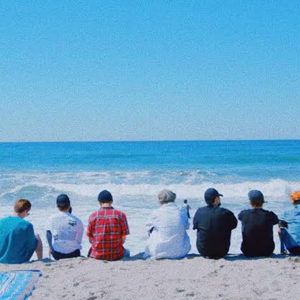
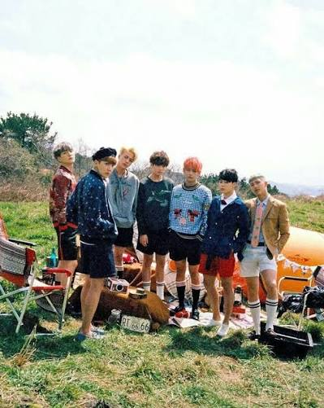
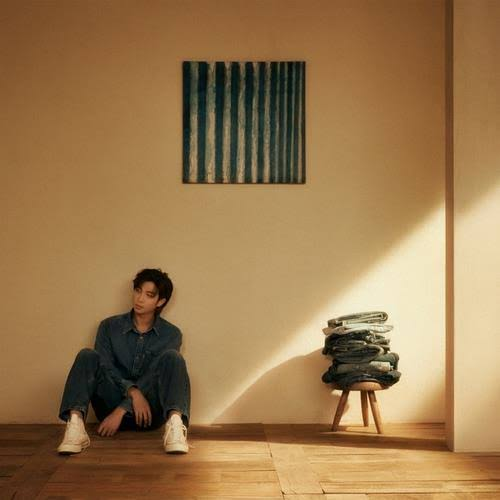

| FOTO | CANCION | LETRA | VIDEO |
|---|---|---|---|
|
 |
SEA |
Oh, ah, ah yeah
어찌어찌 걸어 바다에 왔네
이 바다에서 나는 해변을 봐
무수한 모래알과 매섭고 거친 바람
여전히 나는 사막을 봐
바다 갖고 싶어 널 온통 들이켰어
근데 그 전보다 더 목이 말라
내가 다 아는 것이 진정 바다인가
아니면 푸른 사막인가 (I don't know)
I don't know, I don't know
내가 지금 파도를 느끼고 있는지 yeah
I don't know, I don't know
아직도 모래바람에 쫓기고 있는지 yeah
I don't know, I don't know
바다인지 사막인지 희망인지 절망인지
진짜인지 가짜인지 shit
I know I know 지금 내 시련을
I know I know 이겨낼 것을
I know I know
나야말로 네가 의지할 곳이란 것을 yeah
좋게 생각해 마른침 삼켜
불안하더라도 사막일지라도
아름다운 나미브 사막이라고
희망이 있는 곳엔 반드시 시련이 있네
희망이 있는 곳엔 반드시 시련이 있네
희망이 있는 곳엔 반드시 시련이 있네
희망이 있는 곳엔 반드시 시련이 있네
희망이 있는 곳엔
You know, you know, you know, you know, yeah yeah
희망이 있는 곳엔
You know, you know, you know, you know, yeah yeah
바다인줄 알았던 여기는 되려 사막이었고
별거 없는 중소아이돌이 두번째 이름이었어
방송에 짤리기는 뭐 부지기수
누구의 땜빵이 우리의 꿈
어떤 이들은 회사가 작아서 제대로 못 뜰거래
I know I know 나도 알어
한방에서 일곱이 잠을 청하던 시절도
잠이 들기전에 내일은 다를거란 믿음도 (믿음도)
사막의 신기루 형태는 보이지만 잡히지는 않았고
끝이 없던 이 사막에서 살아남길 빌어
현실이 아니기를 빌어
결국 신기루는 잡히고 현실이 됐고
두렵던 사막은 우리의 피 땀 눈물로 채워 바다가 됐어
그런데 이 행복들 사이에
이 두려움 들은 뭘까
원래 이곳은 사막이란걸 우린 너무 잘 알아
울고 싶지 않아
쉬고 싶지 않아
아니 조금만 쉬면 어때
아니 아니 아니
지고 싶지 않아
원래 사막이잖아
그럼 달려야지 뭐
더 우울해야지 뭐
희망이 있는 곳엔 반드시 시련이 있네
희망이 있는 곳엔 반드시 시련이 있네
희망이 있는 곳엔 반드시 시련이 있네
희망이 있는 곳엔 반드시 시련이 있네
희망이 있는 곳엔
You know, you know, you know, you know, yeah yeah
희망이 있는 곳엔
You know, you know, you know, you know, yeah yeah
Ocean, desert, the world
Everything is the same thing
Different name
I see ocean, I see desert, I see the world
Everything is the same thing
But with different name
It's life again
희망이 있는 곳엔
You know, you know, you know, you know, yeah yeah
희망이 있는 곳엔
You know, you know, you know, you know, yeah yeah
희망이 있는 곳엔 반드시 절망이 있네
희망이 있는 곳엔 반드시 절망이 있네
희망이 있는 곳엔 반드시 절망이 있네
희망이 있는 곳엔 반드시 절망이 있네
우린 절망해야해 그 모든 시련을 위해
우린 절망해야해 그 모든 시련을 위해
|
ir a youtube |
 |
YOUNG FOREVER |
막이 내리고, 나는 숨이 차
복잡해진 마음, 숨을 내쉰다
오늘 뭐 실수는 없었었나
관객들의 표정은 어땠던가
그래도 행복해 난 이런 내가 돼서
누군가 소리 지르게 만들 수가 있어서
채 가시지 않은 여운들을 품에 안고
아직도 더운 텅 빈 무대에 섰을 때
더운 텅 빈 무대에 섰을 때 (ayy)
괜한 공허함에 난 겁을 내 (ayy)
복잡한 감정 속에서, 삶의 사선 위에서
괜시리 난 더 무딘 척을 해 (척을 해)
처음도 아닌데 익숙해질 법한데 (법한데)
숨기려 해도 그게 안 돼 (안 돼)
텅 빈 무대가 식어갈 때쯤
빈 객석을 뒤로 하네
지금 날 위로하네
완벽한 세상은 없다고 자신에게 말해 난
점점 날 비워가네
언제까지 내 것일 순 없어 큰 박수갈채가
이런 내게 말을 해, 뻔뻔히
네 목소릴 높여 더 멀리
영원한 관객은 없대도 난 노래할 거야
오늘의 나로 영원하고파
영원히 소년이고 싶어 나, ah
Forever, we are young
나리는 꽃잎 비 사이로
헤매어 달리네 이 미로
Forever, we are young
넘어져 다치고 아파도
끝없이 달리네 꿈을 향해
Forever, ever, ever, ever
(꿈, 희망, 전진, 전진)
Forever, ever, ever, ever
We are young
Forever, ever, ever, ever
(꿈, 희망, 전진, 전진)
Forever, ever, ever, ever
We are young
Forever, we are young
나리는 꽃잎 비 사이로
헤매어 달리네 이 미로
Forever, we are young
넘어져 다치고 아파도
끝없이 달리네 꿈을 향해
Forever, we are young
나리는 꽃잎 비 사이로
헤매어 달리네 이 미로
Forever, we are young
넘어져 다치고 아파도
끝없이 달리네 꿈을 향해
|
ir a youtube |
| 00 O CLOCK |
그런 날 있잖아, 이유 없이 슬픈 날
몸은 무겁고 나 빼곤 모두 다
바쁘고 치열해 보이는 날
발걸음이 떨어지질 않아
벌써 늦은 것 같은데 말야
온 세상이 얄밉네
Yeah, 곳곳에 덜컥거리는 과속방지턱
맘은 구겨지고 말은 자꾸 없어져
도대체 왜? 나 열심히 뛰었는데, eh
오, 내게 왜? Eh-eh, yeah
집에 와 침대에 누워
생각해봐 내 잘못이었을까?
어지러운 밤 문득 시곌 봐
곧 열두시
뭔가 달라질까? 그런 건 아닐 거야
그래도 이 하루가 끝나잖아
초침과 분침이 겹칠 때
세상은 아주 잠깐 숨을 참아, zero o'clock
and you gonna be happy
(Ooh-ooh) and you gonna be happy
막 내려앉은 저 눈처럼
숨을 쉬자 처음처럼
and you gonna be happy
(Ooh-ooh) and you gonna be happy
Turn this all around
모든 게 새로운, zero o'clock
조금씩 박자가 미끄러져
쉬운 표정이 안 지어져
익숙한 가사 자꾸 잊어
내 맘 같은 게 뭐 하나 없어
그래, 다 지나간 일들이야
혼잣말해도 참 쉽지 않아
Is it my fault? Is it my wrong?
답이 없는 나의 메아리만
집에 와 침대에 누워
생각해봐 내 잘못이었을까?
어지러운 밤 문득 시곌 봐
곧 열두시
뭔가 달라질까? 그런 건 아닐 거야
그래도 이 하루가 끝나잖아
초침과 분침이 겹칠 때
세상은 아주 잠깐 숨을 참아, zero o'clock
and you gonna be happy
(Ooh-ooh) and you gonna be happy
막 내려앉은 저 눈처럼
숨을 쉬자 처음처럼
and you gonna be happy
(Ooh-ooh) and you gonna be happy
Turn this all around
모든 게 새로운, zero o'clock
두 손 모아 기도하네
내일은 좀 더 웃기를 for me, 좀 낫기를 for me
이 노래가 끝이 나면
새 노래가 시작되리, 좀 더 행복하기를, yeah
and you gonna be happy
(Ooh-ooh) and you gonna be happy (happy, happy)
아주 잠깐 숨을 참고 (참고)
오늘도 나를 토닥여
and you gonna be happy
Turn this all around
모든 게 새로운, zero o'clock
|
ir a youtube | |
| LOVE MYSELF |
눈을 뜬다 어둠 속 나
심장이 뛰는 소리 낯설 때
마주 본다 거울 속 너
겁먹은 눈빛 해묵은 질문
어쩌면 누군가를 사랑하는 것보다
더 어려운 게 나 자신을 사랑하는 거야
솔직히 인정할 건 인정하자
니가 내린 잣대들은 너에게 더 엄격하단 걸
니 삶 속의 굵은 나이테
그 또한 너의 일부 너이기에
이제는 나 자신을 용서하자 버리기엔
우리 인생은 길어 미로 속에선 날 믿어
겨울이 지나면 다시 봄은 오는 거야
차가운 밤의 시선
초라한 날 감추려
몹시 뒤척였지만 ey
저 수많은 별을 맞기 위해 난 떨어졌던가
저 수천 개 찬란한 화살의 과녁은 나 하나
You’ve shown me I have reasons
You’ve shown me I have reasons
I should love myself (oh)
I should love myself (oh)
내 숨 내 걸어온 길 전부로 답해
어제의 나 오늘의 나 내일의 나
(I’m learning how to love myself)
(I’m learning how to love myself)
빠짐없이 남김없이 모두 다 나
정답은 없을지도 몰라
어쩜 이것도 답은 아닌 거야
그저 날 사랑하는 일조차
누구의 허락이 필요했던 거야
난 지금도 나를 또 찾고 있어
But 더는 죽고 싶지가 않은 걸
슬프던 me
아프던 me
더 아름다울 미
그래 그 아름다움이
있다고 아는 마음이
나의 사랑으로 가는 길
가장 필요한 나다운 일
지금 날 위한 행보는
바로 날 위한 행동
날 위한 태도
그게 날 위한 행복
I’ll show you what I got
I’ll show you what I got
두렵진 않아 그건 내 존재니까
Love myself
Love myself
시작의 처음부터
끝의 마지막까지
해답은 오직 하나
왜 자꾸만 감추려고만 해 니 가면 속으로 (hey)
내 실수로 생긴 흉터까지 다 내 별자린데 (ey)
You’ve shown me I have reasons
You’ve shown me I have reasons
I should love myself (oh oh)
I should love myself (oh oh)
내 숨 내 걸어온 길 전부로 답해
내 안에는 여전히 oh
서툰 내가 있지만 (whoa)
You’ve shown me I have reasons
You’ve shown me I have reasons
I should love myself
I should love myself
(I’m learning how to love myself) (oh)
(I’m learning how to love myself) (oh)
내 숨 내 걸어온 길 전부로 답해 (oh, oh)
어제의 나 오늘의 나 내일의 나 (whoa)
(I’m learning how to love myself)
(I’m learning how to love myself)
빠짐없이 남김없이 모두 다 나
|
ir a youtube | |
|
 |
WILD FLOWER |
Flower field, that's where I'm at (where I'm at)
Open land, that's where I'm at (where I'm at)
No name, that's what I have (what I have)
No shame, I'm on my grave (yo)
두 발이 땅에 닿지 않을 때
당신의 마음이 당신을 넘볼 때
꿈이 나를 집어삼킬 때
내가 내가 아닐 때
그 모든 때 yeah
불꽃을 나는 동경했었네
그저 화려하게 지고 싶었네
시작의 전부터 나 상상했었지
끝엔 웃으며 박수 쳐 줄 수 있길
나 소원했었네
믿었던 게 다 멀어지던 때
이 모든 명예가 이젠 멍에가 됐을 때
이 욕심을 제발 거둬가소서
어떤 일이 있어도
오, 나를 나로 하게 하소서
Oh, everyday and every night (ya)
Persistin' pain and criminal mind (ya)
내 심장소리에 잠 못 들던 밤
창밖에 걸린 청승맞은 초승달
I do wish me a lovely night (ya)
내 분수보다 비대해진 life (ya)
저기 날아오르는 풍선을 애써 쥐고
따져 물어, 대체 지금 넌 어디에?
Where you go? Where's your soul?
Yo, where's your dream?
저 하늘에 흩어질래
Light a flower, flowerwork
Flower, flowerwork
저 하늘에 눈부시게 (hey, hey)
Light a flower, flowerwork
Flower, flowerwork
그 어디까지가 내 마지막일까?
전부 진저리 나, 하나 열까지 다
이 지긋지긋한 가면은 언제 벗겨질까?
Yeah, me no hero, me no villain
아무것도 아닌 나
공회전은 반복돼, 기억들은 난폭해
난 누워 들판 속에, 시선을 던져 하늘 위에
뭘 원했었던 건지 이제 기억이 안 나
얻었다 믿었던 모든 행복은 겨우 찰나
Yeah, I been goin', no matter what's in front
그게 뭐가 됐건
새벽의 옷자락을 붙잡고 뭔가 토해내던 기억
목소리만 큰 자들의 사회
난 여전히 침묵을 말해
이건 방백, 완숙한 돛단배
모든 오해 편견들에 닿게
반갑지 않아 너의 헹가래
내 두 발이 여기 땅 위에 (ayy)
이름도 없는 꽃들과 함께
다신 별에 갈 수 없어 I can't
발밑으로 I just go
목적 없는 목적지로
슬픈 줄도 모르고
그림자마저 친구로 I be gone
저 하늘에 흩어질래 (ooh-ooh-ooh-ooh)
Light a flower, flowerwork
Flower, flowerwork
저 하늘에 눈부시게
Light a flower, flowerwork
Flower, flowerwork
문득 멈춰보니 찬란한 맨발
원래 내 것은 아무것도 없었지 (that's right)
And don't tell me like you gotta be someone
난 절대 그들처럼 될 수 없으니
그래, 내 시작은 시
여태껏 날 지켜온 단 하나의 힘과 dream
(Light a flower) 타는 불꽃에서 들꽃으로
소년에서 영원으로
나 이 황량한 들에 남으리
아, 언젠가 나 되돌아가리
저 하늘에 흩어질래
Light a flower, flowerwork
Flower, flowerwork
저 하늘에 눈부시게 (hey, hey)
Light a flower, flowerwork
Flower, flowerwork
Flower field, that's where I'm at (where I'm at)
Open land, that's where I'm at (where I'm at)
No name, that's what I have (what I have)
No shame, I'm on my grave (yo)
두 발이 땅에 닿지 않을 때 (두 발이 땅에 닿지 않을 떄)
당신의 마음이 당신을 넘볼 때 (당신의 마음이 당신을 넘볼 때)
꿈이 나를 집어삼킬 때
내가 내가 아닌 때
그 모든 때 yeah (la-la-la)
|
ir a youtube |